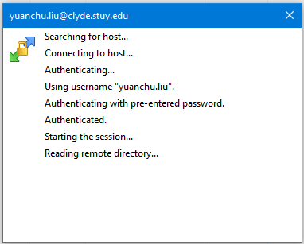

Introduction to Remote File Transfer¶
Written by PChan on 2017-03-18
Using FileZilla¶
FileZilla is a graphical program that is used primarily for transferring files between a local machine and a remote machine. If you have not done so already, install the program following the Installing FileZilla guide.
Authenticating Yourself¶
After executing the program, the first step to connecting is to enter your credentials. Near the top of the program, you should see a bar like the following (yours would not have text):

Fill in the following information:
- Host: clyde.stuycs.org
- Username: the username for your StuyCS account
- Password: the password for your StuyCS account
- Port: 22
Lastly, click on the Quick Connect button. Below that, you should see the progress similar to the image below.

Transferring Files with FileZilla¶
After you have successfully connected, the multi-pane panel near the bottom of the screen should be populated similar to the following image:

To copy from the local machine to the remote machine, locate the file on the left pane and then simply drag the file from the left pane to the right pane. To copy from the remote machine to the local machine, locate the file on the right pane and then simply drag the file from the right pane to the left pane.
Using WinSCP¶
WinSCP is a third-party Windows-only program that is used primarily for transferring files between a local machine and a remote machine. If you have not done so already, install the program following the Installing WinSCP guide.
When you execute the program, you should see a pop up similar to the one below:
Authenticating Yourself¶
To log in, you need to fill in the following fields:
- Host name: clyde.stuycs.org
- User name: the username for your StuyCS account
- Password: the password for your StuyCS account
Lastly, click on the Login button near the bottom of the window. As the program attempts to connect to the remote machine, you would see the following window detailing the progress...
Transferring Files with WinSCP¶
After you successfully authenticated yourself, you should see something like the window below (with different filenames):

The left panel is the file listing of your local machine and the right panel is the file listing of the remote machine.
To move files from your local machine to the remote machine, simply look for the file in the left panel and drag it over to the right panel. To get a file from the remote machine, simply drag the file from the right panel to the left panel.